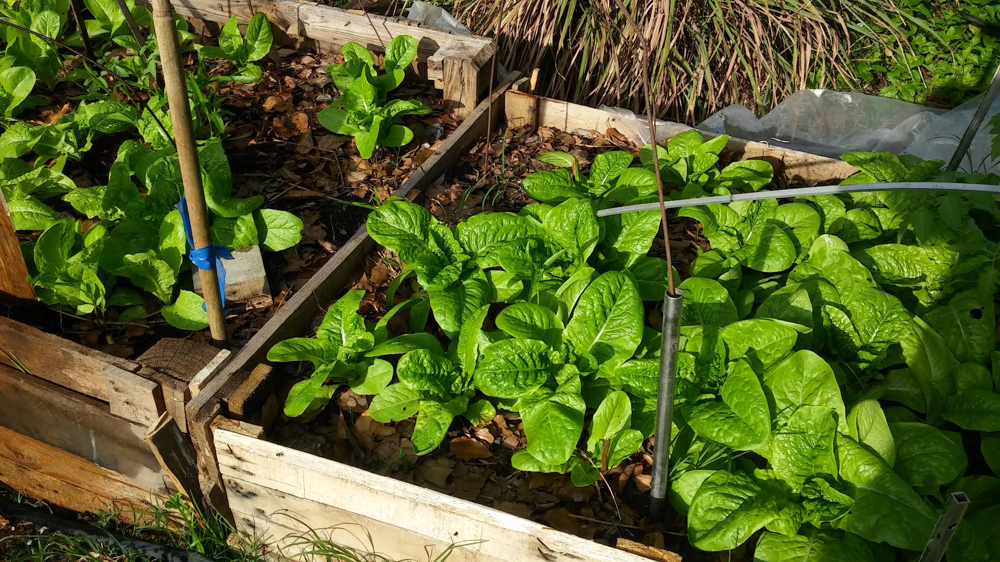
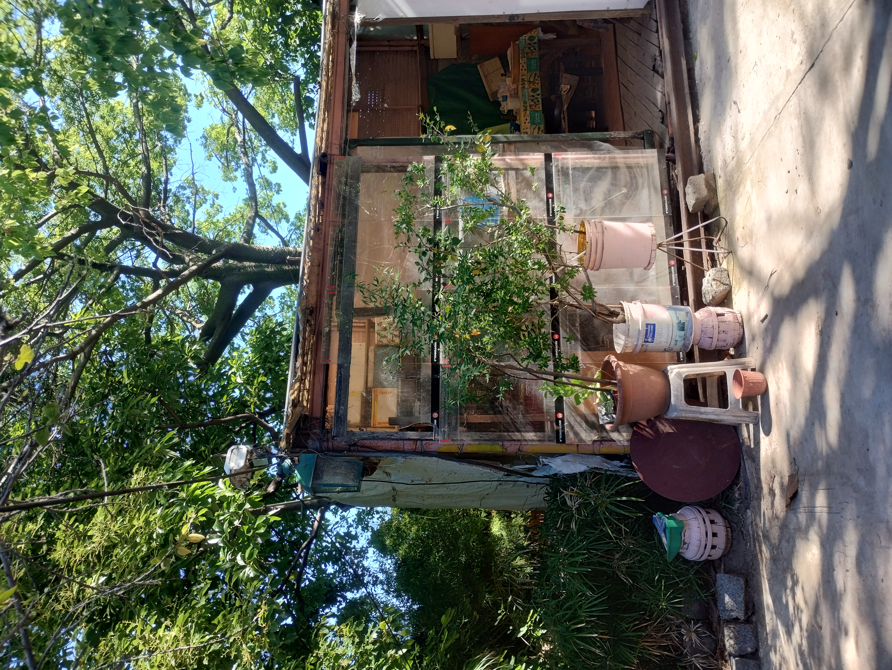
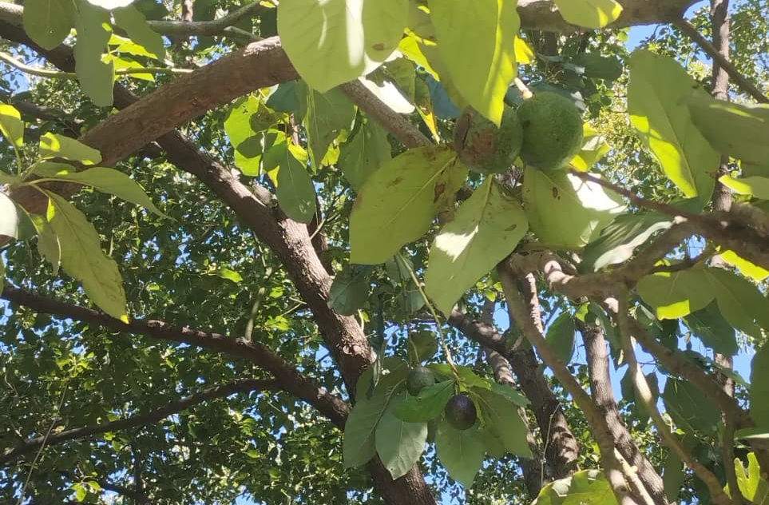
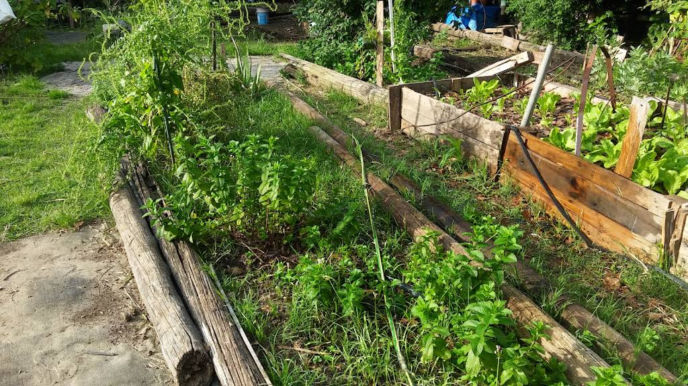
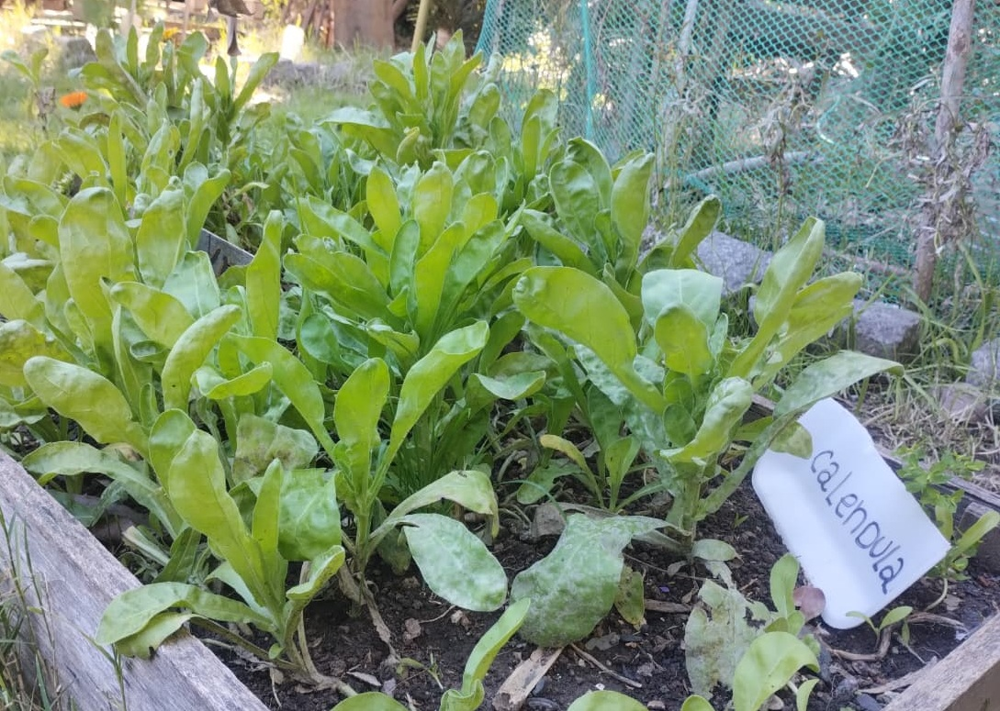

La huerta

Espinacas listas para cosechar. Solemos sembrar plantas de hojas verdes en invierno.

Hibernadero donde germinamos semillas hasta que sean plantines, listos para llevar a los canteros. También se guarda el material para la huerta.

Árbol de palta. Siempre tiene muchos frutos, que solemos cosechar en primavera.

Menta lista para cosechar. Tenemos mucha cantidad, ya que crece rápido y con facilidad.

Planta de caléndula. Se planta porque con sus flores atrae polinizadores a la huerta.
En la huerta plantamos de todo. Muchas veces, las siembras y los cuidados se realizan junto con los cursos, donde aprendemos de manera práctica sobre el cultivo, las plantas y el trabajo con la tierra.
Cuando se cosecha lo generado, se reparte entre las personas que asisten a la huerta, a vecinos o a comedores de la zona.